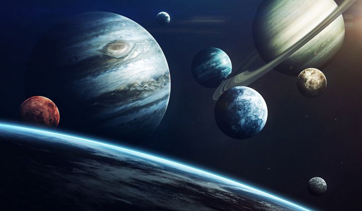

3D Model (Touch and Rotate)
The Solar System is the gravitationally bound system of the Sun and the objects that orbit it, either directly or indirectly. Of the objects that orbit the Sun directly, the largest are the eight planets, with the remainder being smaller objects, such as the five dwarf planets and small Solar System bodies.
Known minor planets: 796,354 (as of 2019-08-27)
Known planets: 8 (Mercury; Venus; Earth; Mars; Jupiter; Saturn; Uranus; Neptune)
The solar system includes the Sun and all the objects that orbit around it due to its gravity. This includes things such as planets, comets, asteroids, meteoroids and moons.
The Solar System formed around 4.6 billion years ago.
There are eight planets in the Solar System. The four inner planets are Mercury, Venus, Earth and Mars while the four outer planets are Jupiter, Saturn, Uranus and Neptune.
The inner planets (also known as terrestrial planets) are smaller and made mostly of rock and metal.
The outer planets (also known as gas giants) are much larger and made mostly of hydrogen, helium and other gases.
As of 2008, there are also five dwarf planets: Pluto, Ceres, Eris, Makemake & Haumea.
There is an asteroid belt which lies between the orbits or Mars and Jupiter, it features a large number of irregular shaped asteroids.
For thousands of years humans were unaware of the Solar System and believed that Earth was at the center of the Universe.
Astronomers such as Nicolaus Copernicus, Galileo Galilei, Johannes Kepler and Isaac Newton helped develop a new model that explained the movement of the planets with the Sun at the center of the Solar System.
The Sun contains 99.86 percent of the Solar System's known mass, with Jupiter and Saturn making up making up most of the rest. The small inner planets which include Mercury, Venus, Earth and Mars make up a very small percentage of the Solar System's mass.
